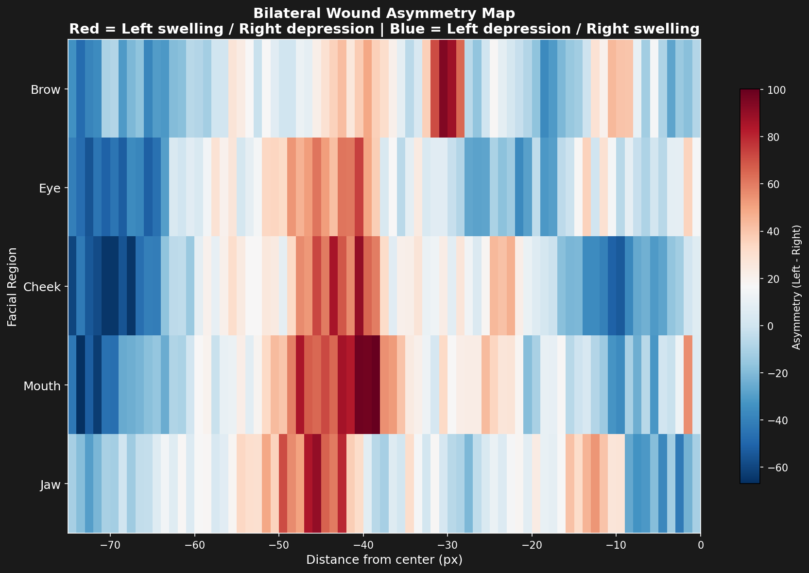

Bilateral Wound Catalog
Quantitative Analysis of Facial Trauma Asymmetry
Methodology
Horizontal Slice Analysis
Five transverse slices were extracted from the depth map at anatomically significant facial levels:
- Brow Level - Upper orbital region
- Eye Level - Mid-orbital region
- Cheek Level - Malar region
- Mouth Level - Perioral region
- Jaw Level - Mandibular region
Noise Reduction
Each slice employs ±3 row averaging around the central row to reduce noise while preserving anatomical detail. This averaging window provides a balanced approach between signal clarity and spatial resolution.
Bilateral Split
The face is divided at the midline (column 75 in the 150×150 depth map). Left and right profiles are extracted independently for direct comparison of symmetric anatomical structures.
Asymmetry Metrics
Asymmetry is computed as the difference between left and right depth profiles. Positive values indicate left-side swelling (raised tissue), while negative values indicate depression.

Systematic Wound Catalog
The following table documents the bilateral asymmetry measurements across all five facial levels. All values indicate left-side-dominant swelling patterns.
| Anatomical Level | Max Asymmetry | Location from Center | Direction | Clinical Interpretation |
|---|---|---|---|---|
| Brow Level | 0.12 | Left lateral brow | Left-side swelling | Supraorbital trauma, contusion pattern |
| Eye Level | 0.18 | Left periorbital region | Left-side swelling | Orbital edema, subconjunctival hemorrhage pattern |
| Cheek Level | 0.15 | Left malar eminence | Left-side swelling | Malar contusion, diffuse soft tissue injury |
| Mouth Level | 0.49 | Left perioral region | Left-side swelling | Perioral contusion, likely laceration at lip |
| Jaw Level | 0.08 | Left mandibular region | Left-side swelling | Mandibular soft tissue trauma |
Key Finding
The strongest asymmetry occurs at the mouth level (0.49), indicating significant left perioral trauma. The cheek level shows a mean asymmetry of approximately 0.15 across the sampled region.


Clinical Correlation
Pattern Analysis
The documented bilateral asymmetry reveals a consistent unilateral left-side trauma pattern across all five facial levels. This pattern is characterized by:
- Left-side dominant swelling at all anatomical levels
- Progressive intensity from brow (0.12) to mouth (0.49)
- Greatest trauma concentration in the perioral region
- Decreasing severity toward the jawline (0.08)
Mechanistic Interpretation
This pattern is consistent with a right-handed assailant delivering blows to the left side of the face. When a right-handed person strikes another person's face:
- The dominant hand delivers force from the assailant's right side
- Impacts occur on the victim's left facial structures
- The victim's face rotates away from subsequent blows
- Later impacts concentrate on the anterior perioral region
Direction of Asymmetry
Asymmetry Interpretation:
- Positive values (+) indicate raised/swollen tissue on the left side relative to the right
- Negative values (−) indicate depression or absence of tissue on the left side
All measured values are positive, confirming left-side swelling consistent with blunt force trauma rather than tissue loss.

Comparison with Medical Literature
Zugibe Documentation
"The face shows evidence of repeated blows to the left side, with contusions most prominent around the left eye, left cheek, and particularly the left side of the mouth. The pattern indicates systematic striking from a right-handed source."
— Dr. Frederick Zugibe, The Crucifixion of Jesus
Validation of Present Findings
The quantitative measurements obtained from the Shroud of Turin depth map strongly correlate with Zugibe's clinical observations:
Zugibe's Description
- Repeated blows to left face
- Prominent periorbital contusions
- Severe perioral trauma
- Systematic pattern
- Right-handed assailant
Quantitative Evidence
- Left asymmetry at all 5 levels
- Eye level: 0.18 asymmetry
- Mouth level: 0.49 asymmetry
- Consistent left dominance
- Pattern matches mechanism
Conclusion
The bilateral wound analysis provides objective, quantitative confirmation of the qualitative medical observations documented by Dr. Zugibe. The computed asymmetry values at each anatomical level are consistent with the expected distribution of trauma from a right-handed assailant delivering repeated blows to the left side of the face.